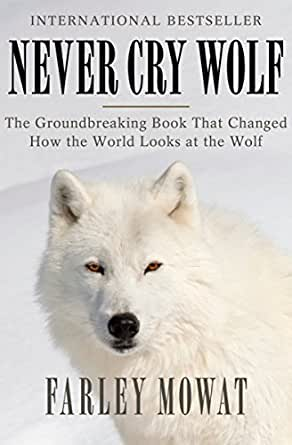

«Не кричи: «Волки!»» Фарли Моуэт
Биография
Фарли Моуэт (англ. Farley McGill Mowat, 12 мая 1921, Belleville, штат Онтарио, Канада - 6 мая 2014, Порт Хоуп, Южная Онтарио) — известный канадский писатель, биолог, борец за охрану природы. Его отец, Ангус Моуэт, принимал участие в битве при Вими, после войны стал библиотекарем и писал литературные произведения. Во время Великой депрессии семья переехала в Саскатун. В Саскатуне Фарли содержал у себя дома гремучую змею, белку, двух сов, флоридского аллигатора и несколько котов. В 1935 году он совершил своё первое путешествие в Арктику со своим родственником Франком. Во время Второй мировой войны Фарли Моуэт принимал участие в военных действиях в Европе в составе американской армии, участвовал в высадке союзных войск в Сицилии, воевал в Западной Европе и на Эльбе в 1945 году встречался с советскими солдатами.
О книге
По заданию Службы дикой природы Канады Фарли Моуэт отправляется на север страны, чтобы узнать, как волки влияют на сокращение поголовья оленей. Поначалу он полон страхов и предрассудков, но постепенно Моуэт привязывается к волчьему семейству. Георг, Ангелина, Дядюшка Альберт и их волчата — величественные, преданные и игривые, — оказываются совсем не похожи на традиционный образ жестокого серого хищника. На их фоне куда более жестоким и опасным выглядит человек.

О книге
| Автор |
Фарли Моуэт |
| Год написания |
1963 г. |
| Жанр |
Документальная проза |
Отзывы
12.02.20 | 13:44
В этой книге биолог Фарли Моуэт рассказывает о своей экспедиции в канадской тундре, целью которой было наблюдение за волками. Автор с большой любовью говорит о том, кого принято называть диким и опасным, открывая перед читателем другую сторону этого прекрасного животного. Есть критика в адрес его наблюдений, основанная на том, что в разных регионах и в разных обстоятельствах, волки могут вести себя не так, как описывает автор книги. Наверное, это замечание не безосновательно, но во-первых я в сюжете слабо разбираюсь и высказываться о точности данных не берусь,
12.02.20 | 13:44
во-вторых, разница в поведении в зависимости от локации и других всевозможных факторов присуща всем и всему, в том числе человеку, это не умаляет ценности работы Моуэта, на мой взгляд. Для себя лично я узнала из книги много нового, прочувствовала увлечение автора тем, чем он занимается, он смог передать это читателю через книгу (а это меня всегда подкупает, я восхищаюсь увлеченными людьми, у которых глаз горит на дело своей жизни). Эту книгу мне порекомендовали в годовом флешмобе в далеком 2014 году. Прочитала ее с огромным удовольствием, и с тех пор, сама из года в год советую ее другим участникам, потому что хочется, чтобы об этой книге узнали многие, она действительно того стоит.!
12.02.20 | 13:44
во-вторых, разница в поведении в зависимости от локации и других всевозможных факторов присуща всем и всему, в том числе человеку, это не умаляет ценности работы Моуэта, на мой взгляд. Для себя лично я узнала из книги много нового, прочувствовала увлечение автора тем, чем он занимается, он смог передать это читателю через книгу (а это меня всегда подкупает, я восхищаюсь увлеченными людьми, у которых глаз горит на дело своей жизни). Эту книгу мне порекомендовали в годовом флешмобе в далеком 2014 году.
12.02.20 | 13:44
Прочитала ее с огромным удовольствием, и с тех пор, сама из года в год советую ее другим участникам, потому что хочется, чтобы об этой книге узнали многие, она действительно того стоит. Несмотря на узконаправленную тематику и жанр, она очень легко читается, она увлекает и порождает интерес к дальнейшему изучению. То есть, свои цели нон-фикшна выполняет на все сто, и даже больше. От души рекомендую!
12.02.20 | 13:44
Прочитала ее с огромным удовольствием, и с тех пор, сама из года в год советую ее другим участникам, потому что хочется, чтобы об этой книге узнали многие, она действительно того стоит. Несмотря на узконаправленную тематику и жанр, она очень легко читается, она увлекает и порождает интерес к дальнейшему изучению. То есть, свои цели нон-фикшна выполняет на все сто, и даже больше. От души рекомендую!